ГЛАВА I
Глава I. Теоретическая часть.
2.1. Язык Python для поиска информации в сети Интернет и парсинга
сайтов.
2.1.1. Общая информация по языку Python и парсингу сайтов.
В современном информационном обществе объем данных, представленных в сети
Интернет, увеличивается с каждым днем.
Использование этих данных может стать ценным ресурсом для решения множества задач, включая
извлечение и дальнейшее
использование информации, анализ данных, машинное обучение и другие. Большинство данных Интернете,
доступны
в виде веб-страниц, и для их эффективного использования необходимо уметь собирать и обрабатывать
нужную
информацию.
Парсинг веб-страниц - это процесс извлечения информации из такой страницы, анализа
ее содержимого
и преобразования в удобный формат для дальнейшей обработки, хранения и более глубокого анализа.
Python – это
мощный, современный, гибкий, высокоуровневый, интерпретируемый язык программирования, который
примечателен
своей простотой, читаемостью и обширной экосистемой библиотек и инструментов. Python стал одним из
наиболее
популярных языков программирования для разработки веб-приложений, анализа данных, искусственного
интеллекта
и других областей.
Язык Python является отличным выбором для работы с данными в Интернете. Благодаря
множеству библиотек
и инструментов, доступных на этом языке, поиск информации и парсинг веб-страниц доступен для
широкого круга
как продвинутых, так и начинающих специалистов. Независимо от того, стоит ли просто вопрос получения
информации для анализа данных, обновления содержимого сайта или выполнения других задач, Python
готов
предоставить все необходимые инструменты для успешной реализации поисково-аналитического комплекса
или реализации иного проекта.
Основные инструменты для парсинга веб-страниц на языке Python:
- Библиотека requests: используется для отправки HTTP-запросов и получения
содержимого страницы.
- Библиотека BeautifulSoup: предоставляет удобные методы для разбора
HTML-кода и извлечения данных.
- Библиотека lxml: используется для парсинга XML-документов и работы с
XPath-запросами.
- Библиотека Scrapy: предоставляет инструменты для создания веб-скрейперов и
парсеров с возможностью
обхода и сбора информации с нескольких страниц.
- Библиотека Selenium: мощный и популярный инструмент не только для парсинга
сайтов, но и для решения
задач в области разработки и тестирования веб-страниц.
2.1.2. Основы использования библиотеки requests.
Библиотека requests является одной из самых популярных библиотек для
отправки HTTP-запросов
и получения данных из сети в языке программирования Python. Она предоставляет простой и удобный
интерфейс для работы
с веб-ресурсами, что делает ее идеальным выбором для парсинга сайтов. С ее помощью возможно
эффективно и гибко собирать
нужную информацию с веб-страниц и использовать ее для различных задач, таких как анализ данных,
мониторинг или
автоматизация процессов.
Основным способом получения веб-страниц является отправка GET-запросов. Библиотека
requests
предоставляет функцию get, которая позволяет отправлять GET-запросы на веб-ресурсы и получать
содержимое
страницы. Возвращаемый объект Response содержит различные данные о запросе и ответе сервера, включая
статус-код,
заголовки и тело ответа.
Изображение № 1. Пример отправки GET-запроса и вывода содержимого страницы
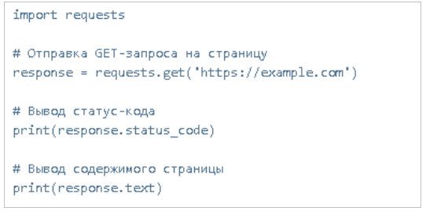
В примере, представленном на изображении №1 мы отправляем GET-запрос на
страницу https://example.com и выводим статус-код ответа и содержимое страницы.
Также часто для получения нужной информации с веб-страницы требуется
передать параметры в запросе (например, для поиска).
Библиотека requests позволяет передавать параметры запроса в виде словаря с помощью аргумента params
функции get.
Изображение № 2. Пример отправки GET-запроса с аргументом params
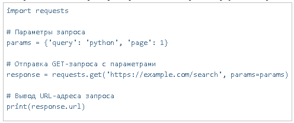
В примере, приведенном на изображении №2 мы передаем параметры запроса в
словаре
params и отправляем GET-запрос на https://example.com/search. Затем мы выводим URL-адрес запроса,
чтобы
убедиться, что параметры были переданы правильно.
Иногда веб-серверы требуют определенных заголовков в запросе для качественной
обработки запроса. Библиотека requests позволяет добавлять заголовки в запрос с помощью аргумента
headers
функции get.
Изображение № 3. Пример отправки GET-запроса с использованием заголовка
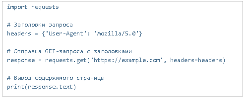
В примере, приведенном на изображении №3 мы добавляем к нашему GET-запросу
заголовок
User-Agent, который говорит серверу о том, что наш запрос идет от пользователя с браузером
Mozilla/5.0.
При парсинге веб-страницы важно предусмотреть возможные ошибки, такие как
недоступность
сервера или неправильные параметры запроса. Библиотека requests предоставляет возможность обработки
ошибок
с помощью исключений.
Изображение № 4. Пример обработки ошибок
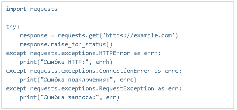
В примере, приведенном на изображении №4, мы используем блоки try-except для
обработки
возможных ошибок. Если возникает ошибка HTTP, соединения или запроса, мы выводим соответствующее
сообщение об
ошибке.
Библиотека requests предоставляет множество других функций и возможностей
для более
гибкого и продвинутого парсинга веб-страниц, которые будут представлены в практической части работы
и приложениях.
2.1.2. Основы использования библиотеки BeautifulSoup
Библиотека BeautifulSoup предоставляет удобные инструменты для парсинга HTML и XML
кода сайтов, облегчая извлечение информации и навигацию по структуре веб-страниц. Использование
библиотеки
BeautifulSoup значительно упрощает процесс парсинга веб-страниц на языке Python. Благодаря удобным
методам
и инструментам, предоставляемым этой библиотекой, имеется возможность быстро и эффективно извлечь
нужную
информацию из HTML кода страницы.
Прежде чем начать использовать BeautifulSoup, необходимо установить ее.
Установка
библиотеки производится с помощью следующей команды pip:
"pip install beautifulsoup4"
После установки мы импортируем библиотеку BeautifulSoup в свой код:
"from bs4 import BeautifulSoup"
Для парсинга веб-страницы сначала нужно получить HTML код этой страницы. Для этого
необходимо использовать описанную ранее библиотеку requests или любой другой способ, который
позволяет
получить HTML код страницы (Изображение №5).
Изображение № 5
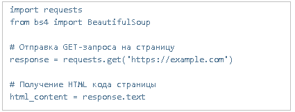
После получения HTML кода страницы, мы можем создать объект BeautifulSoup
для
парсинга этого кода. В качестве второго аргумента в конструкторе BeautifulSoup указывается парсер,
которым будет обрабатываться HTML код. Наиболее часто используемые парсеры - это 'html.parser',
'lxml' и 'html5lib' (Изображение №6).
Изображение № 6
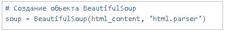
Библиотека BeautifulSoup предоставляет множество методов для извлечения
информации
из HTML кода. Некоторые из основных методов:
- find(): Ищет первый элемент, удовлетворяющий заданным критериям.
- find_all(): Ищет все элементы, удовлетворяющие заданным критериям.
- get_text(): Получает текстовое содержимое элемента.
- get(): Получает значение атрибута элемента.
- select(): Выполняет поиск элементов с помощью CSS-селекторов.
В примере на изображении №7 мы ищем заголовок страницы с помощью метода find
и выводим его текстовое содержимое. Затем мы итерируемся по всем ссылкам на странице, используя
метод find_all, и выводим URL-адрес каждой ссылки.
Изображение № 7
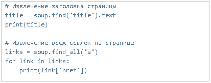
Также библиотека BeautifulSoup позволяет осуществлять навигацию по структуре
HTML кода. Так мы можем перемещаться по родительским и дочерним элементам и выполнять поиск
элементов
на основе их свойств и отношений.
Изображение № 8
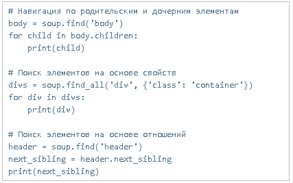
В примере на изображении №8 мы сначала находим элемент "body" и выводим его
дочерние
элементы. Затем мы ищем все элементы "div" с классом "container" и выводим их. Наконец, мы находим
следующий
соседний элемент после "header" и выводим его.
Библиотека BeautifulSoup предоставляет еще множество других методов и
возможностей
для более гибкого и продвинутого парсинга HTML кода, которые будут представлены в практической части
работы
и приложениях.
2.1.3. Основы использования библиотеки Scrapy
Scrapy - это мощный и гибкий фреймворк для создания веб-скрейперов и парсеров на
языке программирования Python. Он предоставляет множество инструментов и функций для автоматизации
процесса
сбора данных с веб-страниц и обхода нескольких страниц одновременно. Рассмотрим основы использования
библиотеки Scrapy для парсинга сайтов.
Прежде чем начать использовать Scrapy, необходимо установить ее. Установка библиотеки
производится с помощью следующей команды pip:
"pip install scrapy"
После установки мы импортируем библиотеку Scrapy в свой код:
"import scrapy"
Для создания парсера с помощью Scrapy необходимо создать новый проект Scrapy
с помощью командной строки:
"scrapy startproject myproject"
После создания проекта, необходимо создать спайдера - класс, который определяет
логику парсинга веб-страниц. В методе parse спайдера вы можете определить, какие данные нужно
собрать и какие
действия нужно совершить на странице.
Изображение № 9.
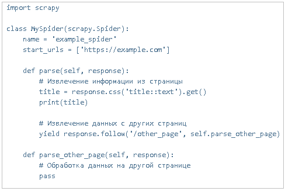
На примере, приведенном на изображении №9 мы создаем новый класс MySpider,
устанавливаем его имя и стартовый URL-адрес. В методе parse мы извлекаем информацию из текущей
страницы,
используя CSS-селекторы. Затем мы вызываем метод follow объекта ответа, чтобы перейти на другую
страницу
и продолжить обработку с помощью метода parse_other_page.
После создания спайдера необходимо запустить парсер с помощью команды scrapy
crawl:
"scrapy crawl example_spider"
Scrapy автоматически выполняет запросы, следует по ссылкам и вызывает методы
парсера
для каждой страницы. Можно настроить Scrapy для обхода нескольких страниц, установки задержек или
отправки
пользовательских заголовков запроса.
Спайдеры Scrapy предоставляют возможности для сохранения собранных данных.
Для этого можно использовать различные результирующие пайплайны, чтобы обрабатывать, фильтровать и
сохранять
данные в различных форматах, таких как CSV, JSON или базах данных.
Изображение № 10.
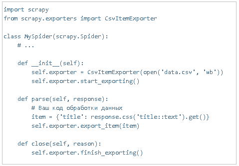
В примере на изображении №10 мы инициализируем экспортер CSV и открываем
файл data.csv,
в который будут сохраняться данные. Затем мы вызываем метод export_item для сохранения элементов на
каждой
странице. По завершению работы мы вызываем метод finish_exporting.
2.1.4. Основы использования библиотеки Selenium
Библиотека Selenium - это мощный инструмент для автоматизации веб-браузера,
который позволяет управлять браузером и взаимодействовать с веб-страницами через код на языке
программирования
Python. Она является одним из наиболее популярных инструментов для парсинга сайтов, особенно тех, в
которых
осуществляется взаимодействие с JavaScript.
Благодаря ее возможностям управление и взаимодействовие с веб-страницами
представляется
высокоэффективным, особенно в части сбора необходимой информации и автоматизации рутинных задач,
связанных
с парсингом и получением данных. В сочетании с другими инструментами Python, библиотека Selenium
предоставляет
широкие возможности для парсинга сайтов и работы с данными из сети Интернет.
Перед началом использования библиотеки Selenium, необходимо установить
драйвер браузера,
который будет использоваться для автоматизации. Драйверы могут быть установлены и настроены согласно
выбору
браузера. Например, для браузера Chrome необходимо установить ChromeDriver, а для Firefox -
GeckoDriver.
После установки драйвера нужно убедиться, что путь к нему добавлен в переменную среды PATH.
Кроме того, также понадобится установить библиотеку Selenium через команду
pip:
"pip install selenium"
Далее, прежде всего, импортируем необходимые модули Selenium в код
Python:
"from selenium import webdriver"
Затем создается экземпляр класса веб-драйвера для выбранного браузера:
"driver = webdriver.Chrome()
# Создание веб-драйвера Chrome"
У объекта веб-драйвера есть множество методов для управления веб-страницами.
Например, метод get используется для перехода на определенную веб-страницу:
"driver.get("https://example.com")
# Переход на страницу example.com"
Методы класса webdriver также позволяют выполнять различные действия на
веб-страницах,
такие как заполнение полей формы, нажатие кнопок, скроллинг страницы и многое другое.
Основной метод получения информации из веб-страницы с использованием
Selenium -
это метод find_element_by, который находит элемент на странице на основе различных атрибутов (Class
Name,
CSS Selector, ID, Link Text и другие). Он используется для нахождения нужной информации на
веб-странице.
"element =
driver.find_element_by_css_selector('#my-element')
# Найти элемент по селектору CSS "
"print(element.text)
# Извлечь текст элемента"
В представленном выше примере мы находим элемент с помощью метода
find_element_by_css_selector, передавая ему CSS-селектор элемента. Затем мы выводим текстовое
содержимое найденного элемента.
После завершения работы необходимо закрыть окно браузера, чтобы освободить
ресурсы.
Такое действие реализуется с помощью метода close:
"driver.close() # Закрытие окна
браузера"
Также возможно закрыть полностью веб-драйвер с помощью метода quit:
"driver.quit() # Полное завершение работы
веб-драйвера"
Важно помнить, что закрывать окно браузера нужно после завершения всех
нужных
операций с веб-страницей.
По умолчанию браузер Selenium работает в видимом режиме, и можно видеть,
как он выполняет действия на веб-странице. Однако библиотека Selenium также предоставляет
возможность
работы в фоновом режиме с помощью драйвера PhantomJS или Headless Chrome.
Пример использования PhantomJS:
"from selenium.webdriver import
PhantomJS"
"driver = PhantomJS() # Создание экземпляра
PhantomJS
веб-драйвера"
"driver.get("https://example.com")
# Переход на страницу example.com"
2.2. Средства хранения данных при парсинге сайтов
2.2.1. Использование CSV при парсинге сайтов
Одним из способов организации и сохранения данных, полученных полученных при
парсинге web-страниц, является использование SCV-формата (Structured Comma Separated Values).
SCV-формат представляет собой специальный тип текстового файла, который
используется
для структурированного хранения данных в виде таблицы. Файл SCV содержит данные, разделенные
запятыми
(или другим разделителем), что позволяет легко читать и обрабатывать информацию.
Данные HTML-кода страницы, извлеченные с помощью, например, такой библиотеки
Python, как BeautifulSoup, возможно сохранять в файл SCV с использованием одноименной библиотеки
CSV.
Рассмотрим основные преимущества и недостатки данного подхода.
Преимущества использования SCV в парсинге сайтов:
• Простота в использовании. Формат SCV предоставляет простую и понятную
структуру
данных, которая легко читается и записывается с помощью Python. Это делает процесс парсинга и
сохранения
данных максимально удобным и эффективным.
• Универсальность. Файлы SCV могут быть открыты различными программами,
включая электронные таблицы, что облегчает работу с данными. Благодаря доступности SCV-формата,
полученные данные могут быть использованы в других приложениях и инструментах для анализа,
визуализации
и обработки информации.
• Сохранение структуры данных. Файлы SCV могут сохранять не только значения,
но и структуру данных, что позволяет сохранять соответствие между различными столбцами и строками.
Это значительно упрощает дальнейшую обработку данных и предоставляет возможность легко извлекать
необходимые значения.
• Возможность автоматизации. С использованием Python и библиотеки для работы
с SCV можно создать скрипт, который будет автоматически парсить веб-страницы и сохранять данные в
SCV-файлы.
Это позволяет значительно сэкономить время и упростить работу с большим объемом данных.
Недостатки использования SCV при парсинге сайтов:
• Ограниченность структуры данных. SCV-формат предоставляет ограниченные
возможности для структурирования данных. Например, сложные связи между таблицами или специфические
типы данных могут быть сложно или невозможно представить в формате SCV.
• Ограничения на объем данных. SCV-формат является текстовым и не предназначен
для хранения больших объемов данных. В случае работы с очень большими массивами информации,
использование
SCV может снизить производительность и эффективность обработки данных.
• Возможные проблемы с кодировкой. В некоторых случаях могут возникнуть проблемы
с кодировкой данных при сохранении и чтении SCV-файлов. Это может привести к искажению данных или
их неправильному представлению.
Отметим, что использование SCV-формата при парсинге сайтов с помощью Python
предоставляет достаточно удобный и эффективный способ организации и сохранения полученных данных.
Однако, необходимо учитывать некоторые ограничения данного формата, как на структуру данных,
так и на возможное возникновение проблем с кодировкой.
2.2.2. Использование JSON при парсинге сайтов
JSON (JavaScript Object Notation) - это формат обмена данными, основанный на
языке JavaScript. Он широко используется веб-разработчиками для передачи и обмена структурированными
данными между клиентской и серверной сторонами приложения. При парсинге сайтов, JSON используется
для
извлечения и преобразования данных, полученных из HTML-разметки в более удобный и легкодоступный
формат.
JSON предоставляет удобное и легкочитаемое представление данных,
которое можно использовать для анализа и дальнейшей обработки. Он позволяет сократить объем кода и
сделать
процесс парсинга более эффективным и гибким.
Для начала, необходимо получить HTML-код страницы. Это можно сделать,
используя библиотеку HTTP-запросов, такую как requests, которая была упомянута выше. После получения
HTML-кода, можно использовать BeautifulSoup, lxml или друние парсеры, чтобы извлечь данные из
HTML-разметки.
Затем, если данные, которые нужно извлечь, представлены в формате JSON
на странице, мы можем использовать методы работы с JSON для их извлечения. JSON-данные обычно
представляются в виде пар "ключ-значение" и могут быть представлены в виде объектов, массивов,
чисел, строк и логических значений.
В простых случаях, когда данные находятся в корневом уровне страницы,
можно просто обратиться к ним через общий для большинства языков программирования синтаксис
обращения к элементам словаря.
Следует учитывать, что в некоторых случаях данные могут находиться
во вложенных структурах и требуют достаточно сложных запросов. В таких случаях следует применить
такие методы работы с JSON, как использование пути к элементу или циклов для обхода всех элементов
массива или объекта.
Кроме того, необходимо учитывать, что при парсинге сайтов,
некоторые веб-страницы могут быть динамически построены с помощью JavaScript, что может усложнить
процесс извлечения данных из JSON. В таких случаях может потребоваться использование
инструментов для автоматического выполнения JavaScript, таких как Selenium WebDriver.
2.2.3. Использование SQL при парсинге сайтов
Для эффективного хранения и организации данных, собранных в процессе
парсинга веб-страниц часто используется язык структурированных запросов SQL (Structured
Query Language) и реляционные базы данных.
Перед началом работы с SQL для хранения данных, нужно выбрать
соответствующую базу данных, которая будет отвечать требованиям проекта. Существуют различные
реляционные базы данных, такие как MySQL, PostgreSQL, SQLite и другие, которые предоставляют
различные функциональности и возможности. Выбор конкретно системой управления базой данных будет
зависеть от предпочтений команды разработчиков, требований к масштабируемости, производительности
и некоторых других факторов.
Одним из основных преимуществ SQL является его способность обеспечивать
структурированное хранение данных. SQL базы данных состоят из таблиц с заданными столбцами и типами
данных для каждого столбца. Это позволяет легко организовать данные и обеспечить соответствие
структуре
данных, что облегчает работу с ними.
В то время как CSV и JSON являются неструктурированными форматами данных,
которые сохраняют информацию в виде текста без явного определения структуры данных. В CSV данные
хранятся в простом текстовом формате с разделителями, а в JSON данные хранятся в виде пар
"ключ-значение".
Это может усложнить управление и обработку данных при использовании этих форматов.
SQL предоставляет средства для выполнения мощных и гибких запросов к данным.
Имеется возможность использовать язык SQL для извлечения нужных данных, применять фильтры,
сортировать
результаты и связывать данные из разных таблиц. Благодаря этому, SQL дает возможность быстро
получить
нужные данные и осуществить сложные операции с ними.
С другой стороны, в CSV и JSON форматах отсутствуют встроенные механизмы
запросов
и фильтрации данных. Для извлечения отдельных данных или выполнения сложных операций придется
обрабатывать
данные вручную с использованием других инструментов или кода Python. В отдельных случаях может быть
более
трудоемким и менее эффективным в сравнении с использованием SQL запросов.
SQL базы данных обеспечивают поддержку целостности данных и механизмы
контроля
доступа. Имеется возможность определить ограничения на значения в таблицах для обеспечения
целостности
данных, а также настроить права доступа для пользователей и ролей. Это значительно упрощает
управление
и контроль данных, особенно в случаях, когда нужно обрабатывать чувствительные данные или
предоставлять
доступ к базе данных другим пользователям.
С другой стороны, в CSV и JSON форматах данных нет встроенной поддержки
целостности данных или контроля доступа, что может привести к выполнению таких операций вручную,
оказаться трудоемким и потенциально приводить к ошибкам.
SQL базы данных предоставляют хорошую масштабируемость и производительность
для хранения и обработки больших объемов данных. Они обладают эффективными механизмами работы с
данными,
оптимизацией запросов и поддержкой индексов для ускорения выполнения запросов и улучшения
производительности.
В то время как CSV и JSON форматы имеют свои преимущества, они не всегда
подходят
для хранения и обработки больших объемов данных. Они могут стать неэффективными при работе
с большими файлами, а также создавать сложности при выполнении операций с данными.
2.2.4. Использование Hadoop при парсинге сайтов
Hadoop - это фреймворк для обработки больших объемов данных на
распределенных
кластерах. В его основе лежит концепция MapReduce, которая позволяет распараллеливать вычисления
и значительно ускорять обработку данных.
Парсинг сайтов на Python с использованием Hadoop может быть полезен
при работе с большим количеством данных, которые требуют распределенной обработки. Например,
если необходимо обработать данные с нескольких тысяч или даже миллионов веб-страниц, обработать
петабайты данных, Hadoop может помочь распараллелить процесс получения и обработки данных,
что может ускорить работу нашего поисково-аналитического программного комплекса.
Для совместного использования Python и Hadoop можно воспользоваться
такими библиотеками, как Hadoop Streaming и Pydoop.
Приведем ряд преимуществ Hadoop, которые могут быть учтены при использовании
инструмента для парсинга сайтов:
• Масштабируемость: Hadoop позволяет обрабатывать большие объемы данных путем
распределения вычислений на большое количество узлов кластера. Это позволяет обрабатывать
и анализировать данные веб-страниц эффективно и масштабировать решение по мере увеличения
количества обрабатываемых сайтов.
• Параллелизм: Hadoop использует концепцию MapReduce, которая позволяет
распараллеливать процесс обработки данных. Данные веб-страницы могут быть разделены на части
и обработаны параллельно на разных узлах кластера, что ускоряет общее время обработки.
• Отказоустойчивость: Hadoop обеспечивает отказоустойчивость за счет
репликации данных на разных узлах кластера. Это означает, что если один узел выходит из строя,
данные сохраняются на других узлах и обработка может продолжаться без потери данных.
2.3. Использование языка Python для анализа данных
2.3.1. Общая информация по возможностям языка Python
для анализа данных
Python является одним из наиболее популярных и широко используемых языков
программирования в мире. Он обладает простым и интуитивно понятным синтаксисом, что делает его
идеальным выбором для анализа данных. Python является мощным и гибким языком программирования,
который предоставляет широкий спектр инструментов и библиотек для анализа данных.
Он легко изучается и его использование для анализа данных может значительно упростить
и ускорить процесс.
Важно отметить, что Python является языком с открытым исходным кодом,
что означает, что он бесплатен и доступен для всех. Это делает его использование актуальным
для широкого круга пользователей и организаций, и позволяет использовать его для различных
целей, включая научные исследования, анализ данных, разработку приложений и многое другое.
Одной из самых популярных библиотек Python для работы с данными
является Pandas. Данная библиотека предоставляет удобный и гибкий интерфейс для работы
с таблицами данных, анализа и манипулирования ими. Pandas предлагает функциональность,
которая позволяет легко выполнять операции, такие как фильтрация, сортировка, объединение
и агрегирование данных.
Еще одной мощной библиотекой Python для анализа данных является
NumPy. Данная библиотека предоставляет поддержку для многомерных массивов, а также
широкий набор функций для работы с ними. NumPy позволяет выполнять математические
операции, такие как сложение, умножение и тригонометрические функции, на массивах
данных. Это позволяет рассматривать NumPy как идеальный инструмент для работы
с большими объемами числовых данных.
Для визуализации данных Python предлагает библиотеку
Matplotlib. Данная библиотека позволяет создавать различные типы графиков,
включая линейные, столбчатые, круговые диаграммы, диаграммы рассеяния и
другие. Matplotlib также предоставляет возможность настройки внешнего вида
графиков, включая метки осей, легенды и цвета. В сочетании с Pandas и NumPy,
Matplotlib делает Python мощным инструментом для визуализации и анализа данных.
Также стоит отметить библиотеку Seaborn, построенную на Matplotlib и
предназначенную для создания статистических визуализаций. Seaborn хорошо
интегрирован с Pandas и позволяет делать выразительные построения наборов
статистических данных, понятные как исследователю, так и конечному пользователю
аналитического продукта.
Еще одной популярной библиотекой для анализа данных
на Python является SciPy. SciPy предоставляет набор функций для решения
сложных математических и научных задач. Он включает в себя функции для
оптимизации, статистики, интерполяции, алгебры и многое другое. SciPy
значительно расширяет возможности Python для анализа данных и делает
его подходящим для широкого спектра приложений.
Для машинного обучения и искусственного интеллекта Python предлагает несколько
популярных библиотек, таких как TensorFlow, Keras и Scikit-Learn. TensorFlow
является мощной библиотекой для создания и обучения нейронных сетей. Keras
предоставляет простой и интуитивно понятный интерфейс для создания моделей
машинного обучения. Scikit-Learn является библиотекой для машинного обучения,
предоставляющей реализацию широкого спектра алгоритмов, таких как классификация,
регрессия, кластеризация и многое другое.
Python также имеет широкую поддержку для работы с базами
данных. Он предоставляет библиотеки, такие как SQLAlchemy, для работы с различными
типами баз данных, включая SQL и NoSQL. Python также имеет возможности для
работы с API и получения данных из различных источников сети Интернет и
различных веб-сервисов, что частично было описано в предыдущих разделах.
Также важно отметить, что одним из преимуществ
использования Python для анализа данных является огромное сообщество
разработчиков и наличие качественно составленной технической документации
для большинства инструментов языка. При возникновении вопросов у разработчиков
и аналитиков всегда есть возможность обратиться к сообществу и найти ответы.
2.3.2. Основы использования библиотеки Pandas для
анализа данных
Pandas предоставляет удобный и мощный инструментарий
для работы с табличными данными и выполнения различных операций над ними.
В этой статье мы рассмотрим основные возможности и функции библиотеки Pandas,
которые делают ее незаменимым инструментом для анализа данных.
Основным объектом в библиотеке Pandas является DataFrame
- двумерный массив данных, представляющий собой таблицу с метками строк и столбцов.
DataFrame позволяет хранить и манипулировать данными различных типов, включая числа,
строки, даты и другие.
Одной из первых задач при работе с данными является их загрузка.
Pandas предоставляет множество функций для чтения данных из различных источников, включая
CSV-файлы, Excel, SQL-базы данных и даже веб-страницы. Например, функция read_csv()
позволяет загрузить данные из CSV-файла и создать DataFrame:
Изображение № 11
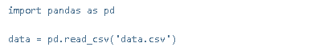
После загрузки данных вы становится возможным выполнение различных
операций над ними. Например, можно узнать размерность данных с помощью атрибута shape:
Изображение № 12
Получить первые или последние строки данных можно с помощью методов
head() и tail():
Изображение № 13
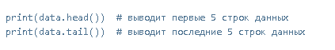
Pandas предоставляет множество функций для фильтрации, сортировки
и манипуляции данными. Например, можно отфильтровать данные, выбрав только те строки,
которые удовлетворяют определенным условиям:
Изображение № 14
Можно выполнять агрегирование данных, например, подсчитывать
среднее значение, максимальное или минимальное значение столбца с помощью метода describe():
Изображение № 15
Pandas также предлагает удобные функции для группировки данных, выполнения
операций при соединении таблиц и многое другое. Например, функция groupby() позволяет сгруппировать
данные по определенному столбцу и выполнить агрегирующую операцию над каждой группой:
Изображение № 16
Важной особенностью Pandas является способность обрабатывать отсутствующие
значения, которые могут быть присутствовать в данных. Pandas предоставляет функции для замены
отсутствующих значений, удаления строк или столбцов с отсутствующими значениями и другие функции
для работы с пропущенными данными.
Pandas также интегрирован с другими популярными библиотеками Python,
такими как NumPy и Matplotlib, что позволяет более эффективно выполнять анализ данных и
визуализацию результатов. Можно использовать функции NumPy для выполнения вычислений над
данными Pandas, а Matplotlib для создания графиков и визуализации результатов анализа. Более
глубокие представления о Pandas будут реализованы в практической части работы и приложениях.
2.3.3. Основы использования библиотек Matplotlib и
Seaborn для анализа данных
Matplotlib и Seaborn - это две мощные библиотеки для визуализации данных
на языке программирования Python. Они предлагают широкие возможности для создания графиков
и визуализации информации с минимальными усилиями. Использование этих библиотек в анализе
данных помогает представить результаты аналитической работы более наглядно и понятно.
Данные библиотек предоставляют широкие возможности выбора наиболее
подходящего графического инструмента, который лучше всего подходит для конкретных потребностей
и задач. Использование этих библиотек вместе с другими инструментами для анализа данных, такими
как библиотека Pandas, помогает лучше понять и интерпретировать данные.
Matplotlib предоставляет широкий спектр возможностей для создания
различных типов графиков, включая линейные, столбчатые, круговые диаграммы, диаграммы
рассеяния и т.д., а также предлагает гибкую настройку внешнего вида графиков, включая настройку
легенд, меток осей, цветов и т.д.
Для создания графиков с помощью Matplotlib, первым шагом является
импорт необходимых модулей:
Изображение № 17
Затем вы можете создать простой график, используя функции plot()
и show():
Изображение № 18
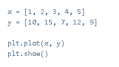
Matplotlib также предлагает множество возможностей для настройки
внешнего вида графиков. Существует возможность добавить метки для осей, заголовки,
легенды и многое другое с помощью соответствующих функций:
Изображение № 19
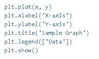
Seaborn, основанная на Matplotlib, позволяет легко создавать
привлекательные графики с помощью простых кодовых конструкций. Для использования
Seaborn сначала необходимо импортировать необходимые модули:
Изображение № 20
Затем можно использовать функции Seaborn для создания различных
типов графиков, таких как столбчатые диаграммы, гистограммы, ящики с усами и др. Например,
создать столбчатую диаграмму с помощью функции barplot():
Изображение № 21
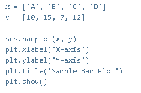
Seaborn также предлагает функции для визуализации статистической
информации, например графики ящика с усами для отображения распределения данных и
показателей центра и размаха:
Изображение № 22
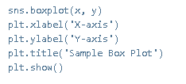
Более глубокие представления о библиотеке Matplotlib будут
реализованы в практической части работы и приложениях.
2.4. Использование SQL для анализа данных
SQL является одним из наиболее распространенных языков
программирования для работы с базами данных. Он позволяет эффективно извлекать д
анные из базы данных, выполнять сложные запросы, агрегирующие функции и другие операции.
SQL предоставляет возможность извлечения, обновления, добавления
и удаления данных из базы данных. Он основан на наборе команд и операторов, которые позволяют
работать с различными типами данных, такими как строки, числа, даты и другие. SQL поддерживает
операции выборки данных (SELECT), вставки данных (INSERT), изменения данных (UPDATE) и удаления
данных (DELETE).
Оператор SELECT является основным для анализа данных в SQL. Он позволяет
выбрать данные из одной или нескольких таблиц базы данных, исходя из определенных условий.
Ключевое слово SELECT заставляет SQL вернуть определенный набор данных, определенный в запросе.
Вот простой пример оператора SELECT:
Изображение № 23
В примере, приведенном на изображении №22 мы выбираем все данные
из таблицы employees. Звездочка (*) указывает, что мы выбираем все столбцы из таблицы. Можно
также указать конкретные столбцы, которые требуется выбрать в запросе.
Оператор WHERE позволяет фильтровать данные в запросе на основе
определенных условий. Например:
Изображение № 24
В запросе, приведенном на изображении №23, мы выбираем только те
строки таблицы employees, в которых значение столбца age больше 30. Мы можем комбинировать
различные условия, используя логические операторы, такие как AND, OR, NOT.
SQL также предлагает возможности агрегации данных, такие
как сумма, среднее и максимальное значение столбца, или подсчет количества строк,
удовлетворяющих определенным условиям. Например:
Изображение № 25
Запрос, приведенный на изображении №24 возвращает количество сотрудников,
у которых возраст больше 30.
Более сложные операции агрегации могут быть выполнены с помощью операторов
GROUP BY и HAVING. GROUP BY позволяет группировать данные по определенным столбцам, а HAVING
позволяет фильтровать данные, на основе агрегированной информации. Например:
Изображение № 26
Запрос, представленный на изображении №26, группирует данные по отделам
и возвращает только те отделы, в которых количество сотрудников больше 10.
SQL также предлагает возможность совмещения данных из нескольких таблиц
с помощью оператора JOIN. JOIN позволяет объединить строки из двух или более таблиц на основе
ключевых полей. Например:
Изображение № 27
В запросе на изображении №26 мы объединяем данные из таблиц employees
и departments, сопоставляя их по полю department_id и id соответственно. Затем мы выбираем имена
сотрудников и названия отделов.
SQL также поддерживает подзапросы, параметризованные запросы, объединения
и другие мощные функции, которые могут быть применимы при анализе данных.
Вместе с тем, SQL не является идеальным инструментом для всех видов
анализа и манипуляции с данными. В некоторых случаях могут потребоваться дополнительные инструменты
или языки программирования для более сложных вычислений и анализа данных. Кроме того, SQL является
стандартным языком запросов для реляционных баз данных, а другие типы баз данных могут использовать
разные языки и подходы к анализу данных.
Более глубокие представления о SQL будут реализованы в практической части
работы и приложениях.
2.5. Использование BI инструментов для анализа данных
и вывода результатов
BI инструменты являются мощным средством для анализа данных и вывода
результатов, что позволяет отдельным исследователям и организациям использовать свои данные
на максимально возможном уровне. Правильное использование BI инструментов помогает принимать
обоснованные и информированные решения, а также повышать эффективность операционной деятельности.
В современном мире использование BI инструментов становится все более необходимым для тех, кто хочет
быть конкурентоспособным и успешным.
Одной из основных целей BI - это сделать данные доступными и понятными
для широкого круга пользователей. С помощью BI инструментов пользователи получают возможность
легко анализировать большие объемы данных и создавать аналитические отчеты и дашборды. BI системы
обладают мощными функциями, которые позволяют пользователю запрашивать данные, объединять их,
агрегировать и визуализировать. Это позволяет пользователям просматривать данные в реальном
времени, отслеживать KPI, выявлять тренды и прогнозировать будущие результаты.
BI позволяет пользователям создавать информативные и наглядные графики,
диаграммы и дашборды, которые помогают визуализировать данные и быстро идентифицировать тренды
и паттерны. Это особенно полезно для менеджеров и руководителей, которым нужно принимать оперативные
решения на основе данных.
Еще одним важным аспектом BI инструментов является построение прогнозов и
моделирование данных. С помощью алгоритмов и методов машинного обучения BI инструменты позволяют
пользователям строить прогнозы и моделировать будущие результаты на основе исторических данных.
Это позволяет принимать решения на основе точных прогнозов и планировать свою деятельность
более эффективно.
2.6. Использование HTML/CSS для вывода результата работы
HTML и CSS являются основными базовыми технологическими инструментами
для создания веб-страниц. Команда проекта в случае наличия данных технологий в своем портфеле
всегда может представить результат своей работы в вебе. Это может послужить альтернативой
использованию Git, так как результат будет представлен не в виде репозитория, а виде аналога
книги с навигацией.
С использованием языка разметки HTML можно легко структурировать
и организовать содержимое, создавая разделы и подразделы, а также добавляя заголовки и различные
элементы форматирования. Кроме того, HTML позволяет добавлять гиперссылки для облегчения навигации
между разделами страницы дипломной работы.
CSS в свою очередь предоставляет возможность стилизовать элементы страницы.
С помощью CSS можно изменять цвета, шрифты, размеры, добавлять иллюстрации и фоновые изображения,
что поможет сделать страницу более привлекательной и профессиональной.
Еще одним важным аспектом создание таблиц. С помощью HTML и CSS можно
создавать различные таблицы, которые помогут представить результаты исследования и обобщить
информацию.
CSS позволяет настраивать внешний вид таблиц, добавлять стили для заголовков и ячеек, а также
добавлять разделители и анимацию.
HTML и CSS также позволяют добавлять интерактивные элементы. Если расширить
технологический стек с помощью JavaScript, который можно интегрировать в HTML-код, можно создать
раскрывающиеся списки, вкладки и кнопки, которые позволят пользователю взаимодействовать с
содержимым
страницы, например, просматривать дополнительную информацию или скрывать часть содержимого по
выбору.
Важным аспектом является также адаптивный дизайн. HTML и CSS позволяют
создавать страницы, которые будут автоматически адаптироваться под различные устройства и экраны.
Это значит, что страница отчета будет выглядеть хорошо на компьютере, планшете или мобильном
устройстве, положительно влияя на опыт пользователей.